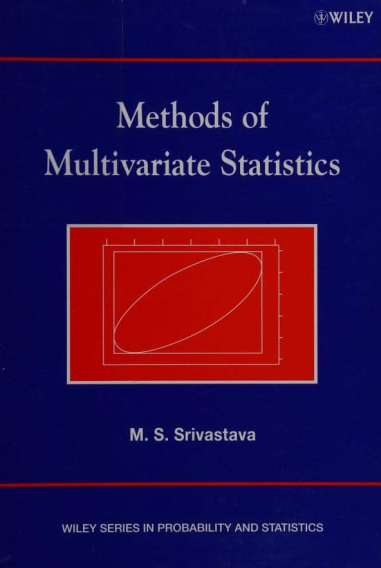
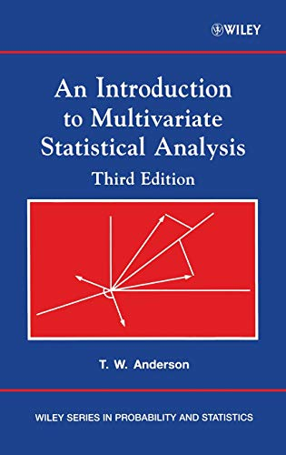

Recommended Books For Multivariate Analysis

Nothing is better resource than a book. So, in this post, I’ve shared some books that have been extremely helpful to me in my quest to learn multivariate analysis.
- Methods of Multivariate Statistics by M.S. Srivastava.
Read the book online or download the pdf.
 - An Introduction to Multivariate Statistical Analysis by T. W. Anderson
Download pdf
 - Applied Multivariate Statistical Analysis by Richard A. Johnson and Dean W. Wichern
Download pdf